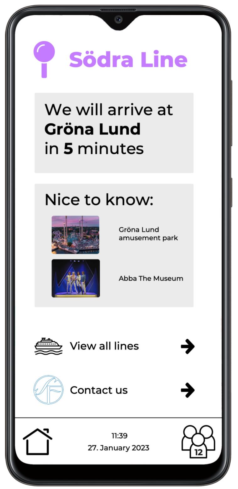
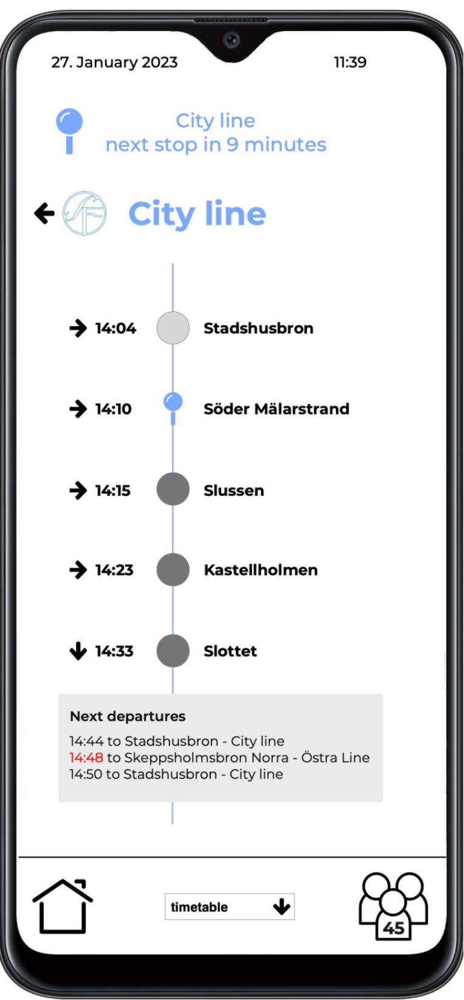
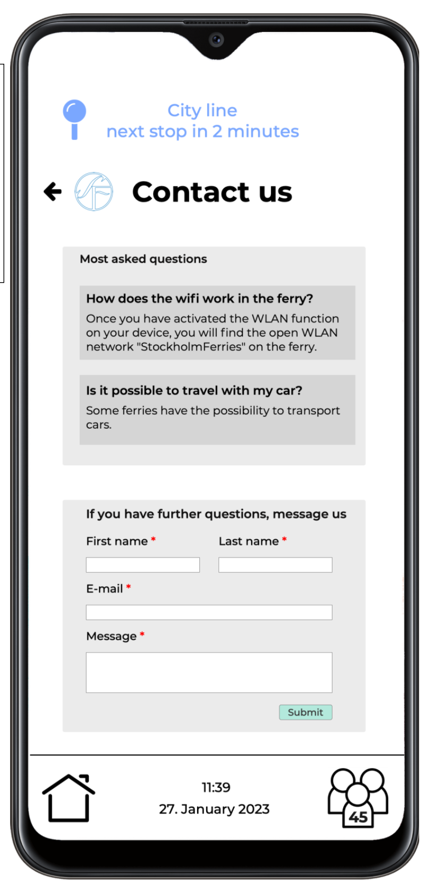
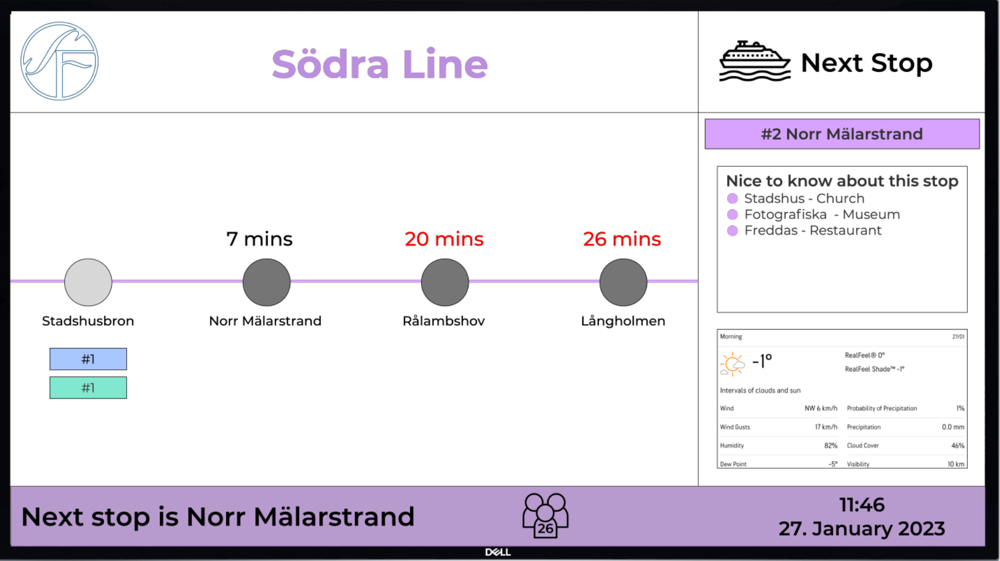

Stockholm Ferris
Short Description
This was a project with a colleague of mine. The goal was to design an app and in-ferry monitors that are cruising through Stockholm.
Screens for the mobile app
Homepage of the smartphone app
We also provided an overview of all the ferry lines for the user to pick

If the line has some delay the time is displayed in red

It is also possible for the user to check other departures from certain stations
Since this app is also for tourists we wanted to add some facts and sightseeing points for each stop

And if someone has feedback we provided a contact page
Screens for ferry monitors
Every line has its own design to match the colors in the app. Moreover, the ligh grey circle was the last stop and the other ones are the following stops.
If there are departures from a certain stop the number of the line in the corresponding color are shown underneath the circles.
Again for the tourists there is a GoodToKnow part on the screen so they have some facts about the stop they are approaching.

If the line has some delay the time is displayed in red also on the monitor
